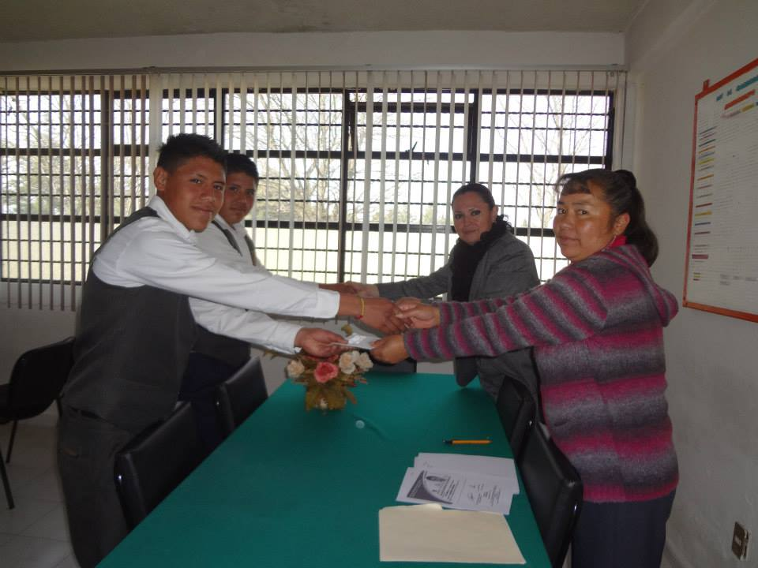

¿QUIENES SOMOS?
HISTORIA DE LA ESCUELA
Nuestra institución en su inicio surgió como C.E.T.A. No. 11 y después de algunos meses, se transformó en C.B.T.A. No. 14, denominación que cambio a C.B.T. Dr. Maximiliano Ruiz Castañeda, en el año de 1991. Establecimiento del nombre oficial de la
escuela septiembre de 1991
Ahora bien el Centro de Bachillerato Tecnológico desde su creación de 1981 a 2013 es una Institución con grandes actividades donde se observó el desarrollado arduamente; a su vez es una Institución muy distinguida ya que han pasa-
do muchas celebridades distinguidas donde han colaborado en su crecimiento y fortalecimiento actual; tanto con sus experiencias, metas, sueños, compromisos que se vivieron.

MISION
Ofrecer una educación integral de mejora continua, formando Bachilleres- Técnicos competentes, con un amplio sentido crítico, ético, creativo y humanista que impacten favorablemente en una sociedad dinámica y demandante.

VISION
Ser la mejor institución del nivel medio superior con mayor demanda por la calidad de educación que ofrece, cuyos egresados tengan un alto grado de competencia al reflejar conocimientos valores y actividades en la educación superior y sector laboral

VALORES
Responsabilidad,
Profesionalismo,
Justicia,
Tolerancia,
Honestidad,
Respeto,
Comunicación,
Paz e
Integridad.